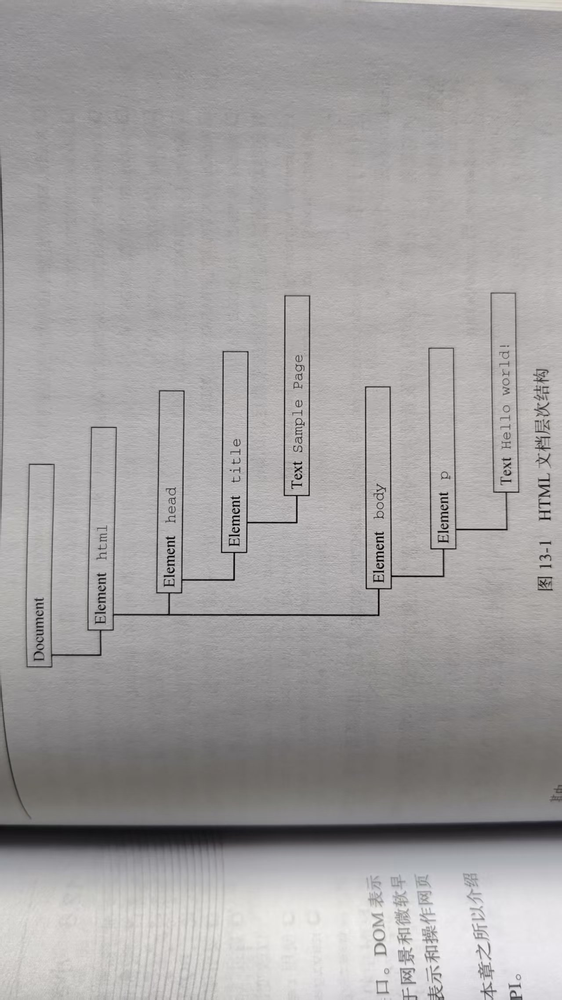
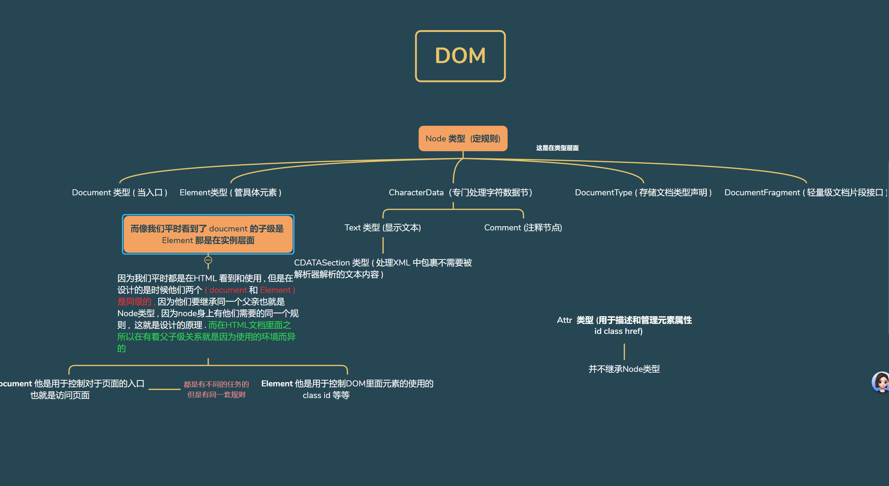

任何HTML 或 XML 文档都可以用 DOM 表示为一个由节点构成的层级结构
<html>
<head>
<title> Sample Page </title>
</head>
<body>
<p> Hello World!</p>
</body>
</html>
如果将以上标记表示为层级结构
其中，document节点表示文档的根节点。在这里，根节点的唯一子节点是
HTML中的每段标记都可以表示为这个树形结构中的一个节点。元素节点表示HTML元素，属性节点表示属性，文档类型节点表示文档类型，注释节点表示注释。 DOM中总共有12种节点类型 , 这些类型都继承一种基本类型
